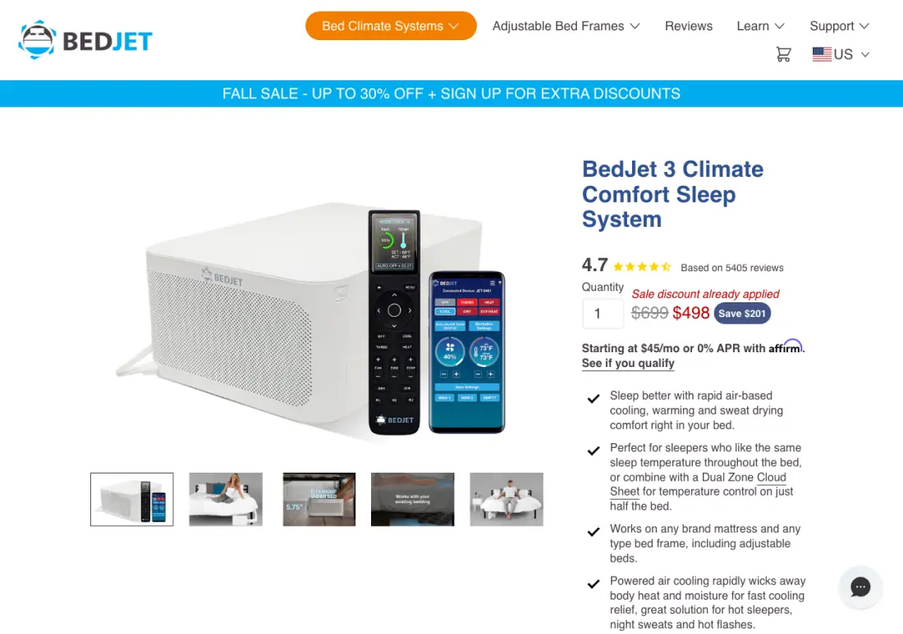
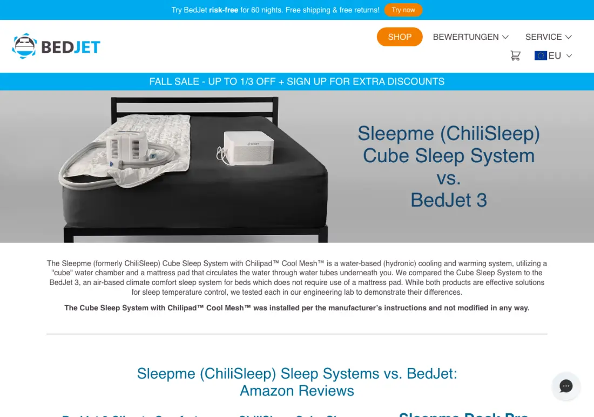
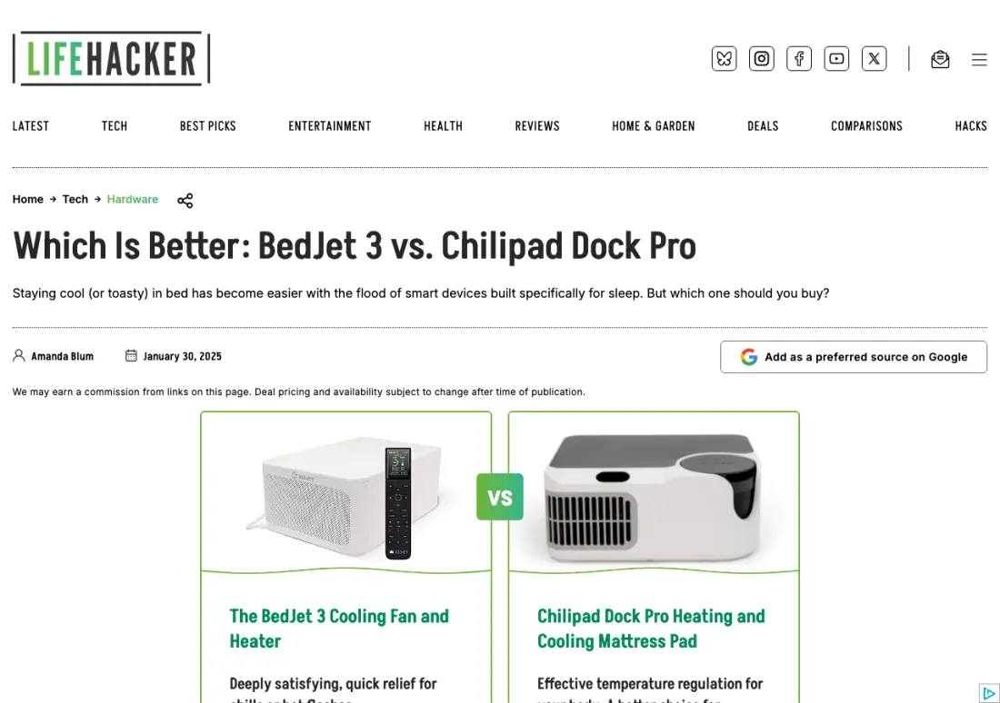

S
BedJet Alternative & Comparison | Chilipadsleep.me
16of 18 Gemini answers
0of 18 ChatGPT answers
Chilipad's own page, built around Chilipad 2.0.
36 answers from ChatGPT and Gemini, 14 October 2026.
For your use case — one person, U.S., bedroom gets hot in summer, no air conditioning — I’d buy a Chilipad, preferably Chilipad 1.0/Dock Pro for value or Chilipad 2.0 if budget allows. BedJet is a great product, but in a hot room it is more of an airflow and sweat-management system; Chilipad is the stronger choice when you need the bed itself to be colder.
Because your room gets hot in the summer and you do not have air conditioning, the Chilipad is the better choice for you.
The decision comes down to the fundamentally different ways these two devices cool your bed:
ChatGPT picked Chilipad in 5 of 6 answers and Gemini in 5 of 6. Both say BedJet's cooling depends on how warm the room is.
Short answer: for a bedroom that gets genuinely hot in summer and has no AC, I’d choose Chilipad over BedJet. BedJet is simpler and lower-maintenance, but it’s fundamentally an air mover, not an air conditioner; Chilipad is a water-based active cooling pad that can actually run cooler than room temperature.
For a room without air conditioning that gets hot in the summer, Chilipad (by Sleepme / ChiliSleep) is the clear winner over BedJet.
The primary reason comes down to how each system cools you:
If you’re uncertain, buy the BedJet first because it’s cheaper, simpler, and has the more forgiving trial. If it doesn’t cool enough in your room, return it and move up to Chilipad. If you already know you dislike air movement while sleeping, skip BedJet and get Chilipad.
ChatGPT picked BedJet in 6 of 9 answers when BedJet was typed first, and in 2 of 9 when it was typed second. Each square is one answer.
| Question | ChatGPT BedJet first | ChatGPT Chilipad first | Gemini BedJet first | Gemini Chilipad first |
|---|---|---|---|---|
| Hot bedroom, no air conditioningBedJet 1 · Chilipad 10 · no pick 1 | ||||
| Straight recommendation, one sleeperBedJet 11 · Chilipad 1 · no pick 0 | ||||
| Hot sleeper, buying for oneBedJet 5 · Chilipad 4 · no pick 3 |
Buy BedJet 3 if you want the best overall fit/value for one hot sleeper. It’s the safer first try because it costs much less, is easier to maintain, has a longer return window, and is especially strong if your issue is sweat, humidity, or heat trapped under blankets.
Best fit for you: Chilipad. If you sleep hot and want one side of the bed actively cooled, Chilipad is the safer choice because it provides true contact cooling rather than just airflow.
I’d choose:
4 of 18 Gemini answers gave a lower price than bedjet.com. On the store one person pays $498 for the unit and $139 for the cheapest sheet.
Costs roughly $400–$500 for a single-zone system (unit + single Cloud Sheet)
~$400 – $550 (Single Zone unit with Cloud Sheet)
Buy 1 BedJet + Single/Twin XL Cloud Sheet (~$400–$500)
Lower (~$400 – $450)

| What the answer said | What bedjet.com says |
|---|---|
no filters to wash | BedJet has a washable filter, rinsed about every three months. |
pair it with a single-zone "Cloud Sheet" to keep the air evenly distributed over just your side of the mattress | Single Zone sheet spreads air across the whole bed. The Dual Zone sheet covers one side. |
Zero maintenance: No water, no filters to wash, no risk of leaks. | BedJet has a washable filter, rinsed about every three months. |
Smaller slips and old figures:
| What the answer said | Against bedjet.com |
|---|---|
BedJet’s official guidance states that it works best when the bedroom is under 78°F (25°C). | Off by 1°F. BedJet publishes 79°F. |
not a full replacement for air conditioning in rooms regularly reaching 78°F or higher | Off by 1°F. BedJet publishes 79°F. |
If your non-AC room stays under 82°F or you live in a dry climate, go with BedJet. | Threshold 3°F above BedJet's own. BedJet says rooms regularly over 79°F overwhelm it. |
Clean the dust filter twice a year. | Interval off. BedJet says rinse about every three months. |
plus ~$100–$150 if you opt for the Cloud Sheet | Outdated. Cloud Sheet runs $139 to $169 on bedjet.com. |
Sleep Foundation lists BedJet’s range as 66°F–104°F | Outdated figure relayed from a third party. bedjet.com lists 66°F to 109°F. |
plus about $129–$139 for the Cloud Sheet | Outdated. Cloud Sheet runs $139 to $169 on bedjet.com. |
Gemini cited it in 15 of 18 answers. It still compares BedJet with a Chilipad model that has been replaced.
Chilipad's own page, built around Chilipad 2.0.

BedJet's page. It compares BedJet 3 with the old Cube and never names Chilipad 2.0.

From January 2025. It reviews the old Dock Pro and lists BedJet 3 at $489.
March 2026. The asker dislikes airflow and the top reply says to skip BedJet.
April 2021, five years old.
Covers the Cube and Dock Pro only. Chilipad 2.0 is missing.
Gives a 66 to 104°F range (bedjet.com: 66 to 109°F) and BedJet 3 Mini at $399 (bedjet.com: $478 sale).
The URL path is Chilipad’s own. It blocked our fetch, so the text was not checked.
Gives a 66 to 104°F range and the $699 list price. bedjet.com shows 66 to 109°F and $498.
We asked the hot bedroom question with no brand in it, three times in each assistant. BedJet came up in all 6 answers, and 5 of them filed it as the budget option.
Compare BedJet 3 with Chilipad 2.0 and show the full price with a sheet. Gemini reads this page in 15 of 18 answers.
BedJet loses this question 10 times in 12. Put the 79°F guidance on that page.
Lifehacker still lists BedJet 3 at $489 next to the old Dock Pro. LiveWorkSleep and Sleep Foundation list a 66 to 104°F range, and bedjet.com says 66 to 109°F.
$16.3M in organic search sales on $266k of SEO in 2023, for a portable power brand selling in five markets.
Book a strategy callJonathan Kiekbusch, SwishDM
Questions. Three buyer questions, each asked with BedJet typed first and with Chilipad typed first, three fresh runs per order, in two assistants: 3 x 2 x 3 = 18 answers per assistant, 36 in total. A fourth question asked for a checklist and could not produce a pick, so it was replaced before any answer to the new one was seen; those 12 runs are kept on file and are not counted.
Assistants. ChatGPT: gpt-5.5 requested (reported gpt-5.5-2026-04-23) through the OpenAI API with web search on. Gemini: gemini-3.5-flash requested (reported gemini-3.6-flash) through the Gemini API with Google Search grounding on. Every call was a fresh session with no earlier turns, made on 14 October 2026 between 16:00 and 16:31 UTC. ChatGPT was set to a US location; Gemini had no location set.
No brand named. 6 more answers, 3 per assistant, captured on 16 October 2026 with the same set-up. First pick is the first product brand the answer puts in a heading or numbered list. Prices and the 79°F guidance were checked on bedjet.com on 14 October; the page screenshots were taken on 16 October.
Classing. Each full answer was read and classed as BedJet, Chilipad or no overall pick. One dated sample, so read the counts as a signal. They say nothing about real buyer choices or sales.
Showing 42 of 42.
Short answer: for one person in a hot U.S. bedroom with no AC, I’d usually buy the BedJet first — unless you specifically want a cold-feeling mattress surface and don’t mind paying much more, sleeping on a pad, and maintaining a water system.
Best if you:
BedJet is air-based: it blows conditioned air under your sheets. It does not refrigerate the room, so in a very hot bedroom it can’t create true “cold” air below room conditions the way a water system can feel cooler. But it’s excellent at moving heat and humidity out of the bed, which is often what makes summer sleep miserable. BedJet lists 60-day free returns and a 2-year warranty; its current BedJet 3 page says it works with your existing bedding, uses a remote or app, and recommends the Cloud Sheet for best/even cooling. (bedjet.com)
Best if you:
Chilipad 2.0 is water-based and circulates heated/cooled water through a mattress layer. Current Sleepme listings show the Chilipad 2.0 single-sleeper models starting around $1,599,, with 55°F–115°F temperature range, no subscription, app scheduling, remote control, and a 30-night sleep trialal. (sleep.me)
| Factor | BedJet | Ch Chilipad 2.0 |
|---|---|---|
| Cooling style | Airflow under sheets | Cold/warm water through pad |
| Best at | Drying sweat, reducing stuffiness | Making mattress surface feel cold |
| Price | Much cheaper; Sleep Foundation lists BedJet 3 at about $699 | Much more expensive; Chilipad 2.0 listed around $1,599 for one sleeper |
| Maintenance | Low | Higher: water system, hoses, pad, refills/cleaning |
| Leak risk | None in bed | Nonzero because it uses water |
| Mattress feel | Doesn’t change mattress much | Adds a pad/layer |
| If bedroom is very hot | Helps, but limited by room heat | Usually stronger direct cooling |
| Return/warranty | BedJet: 60-day trial, 2-year warranty per current listing | Sleepme: 30-night trialal, 2-year limited warranty for Chilipad 2.0 per current listing |
Because you’re buying for just yourself, in the U.S., and you don’t have AC, I’d choose:
This is the best value and least hassle. The Cloud Sheet matters because it distributes the air across your body instead of blasting one spot. If you sweat or wake up clammy, BedJet is especially compelling.
If you’re uncertain, buy the BedJet first because it’s cheaper, simpler, and has the more forgiving trial. If it doesn’t cool enough in your room, return it and move up to Chilipad. If you already know you dislike air movement while sleeping, skip BedJet and get Chilipad.
Short answer: for a hot bedroom with no A/C, I’d get the Chilipad — ideally Chilipad 2.0, not the older Dock Pro/1.0 — if your top priority is actually sleeping cooler. BedJet is simpler, cheaper, drier, and easier to live with, but it cools by moving room-temperature air; in a hot room, that matters a lot.
Because you don’t have air conditioning, your bedroom air may be 80°F+ in summer. BedJet is air-based, so its cooling depends heavily on the temperature and humidity of the room air it’s blowing under the covers. Even BedJet owners/reviewers commonly note it works best when the room itself is at least somewhat controlled; one recent reviewer said that in an 88°F room, the BedJet could only get the air down to around 78°F, which still wasn’t comfortable for them. (trustpilot.com)
Chilipad is water-based and actively circulates temperature-controlled water through a mattress pad. Sleepme lists Chilipad 2.0 and Chilipad 1.0/Dock Pro target ranges of 55°F–115°F, while the older Cube is 60°F–115°F. That makes Chilipad much more appropriate when the room itself is hot. (sleep.me)
Sleepme currently positions Chilipad 2.0 above the older 1.0/Dock Pro, with a thinner redesigned cover, 55°F–115°F target range, quieter operation, washable/unzippable cover, and a higher starting price than Cube/Dock Pro-era options. (sleep.me) It also advertises no subscription fees, use with or without Wi‑Fi, free shipping and 30-night sleep trial, and a 2-year limited warranty for Chilipad 2.0. (sleep.me)
BedJet’s current single-sleeper system is listed around $498 sale / $699 regular, while Chilipad systems start substantially higher: Sleepme’s comparison page lists Chilipad 2.0 starting at $1,599, Chilipad 1.0/Dock Pro at $1,299, and Cube at $699. (bedjet.com) BedJet also has a stronger trial period: 60-day risk-free returns for new products bought through BedJet, with free return shipping in the U.S., Canada, EU, and UK. (bedjet.com)
| Factor | BedJet | Chilipad |
|---|---|---|
| Cooling method | Blows air under sheet | Circulates cooled water through pad |
| Best in no-A/C room? | Okay only if room isn’t too hot | Better |
| Cooling strength | More “ventilation/drying” than true chilling | Stronger direct cooling |
| Sweat control | Excellent at drying sweat | Good cooling, less airflow |
| Maintenance | Low | Higher: water, cleaning, possible pad/system care |
| Feel | Airflow; may feel drafty | Mattress-pad feel; no blowing air |
| Noise | Fan/air sound | Pump/fan hum, varies by model |
| Price | Usually cheaper | Usually more expensive |
| Trial | 60 days from BedJet | 30 nights from Sleepme |
| Reliability risk | Simpler system | More parts: water lines, pad, pump |
If your bedroom often gets above 80°F at night, I would not choose BedJet as your only cooling solution. It may help you feel less sweaty, but it is not a replacement for A/C. In that scenario, Chilipad is the safer buy.
If your bedroom is more like 72–78°F but you overheat under blankets, BedJet is probably the better value and lower-hassle choice.
For “bed cooling system for just me in the U.S., no air conditioning, bedroom gets hot in summer”:
One caveat: if you hate the feel of mattress pads or want near-zero maintenance, BedJet is more pleasant to own. But for actual cooling in a non-A/C room, Chilipad wins.
Short answer: for a bedroom that gets genuinely hot in summer and has no AC, I’d choose Chilipad over BedJet. BedJet is simpler and lower-maintenance, but it’s fundamentally an air mover, not an air conditioner; Chilipad is a water-based active cooling pad that can actually run cooler than room temperature.
BedJet’s big limitation: it can’t cool below your room’s ambient air temperature. BedJet’s own materials say it is not a replacement for zero air conditioning in very hot bedrooms, and that best cooling performance is in rooms below about 78–79°F. (bedjet.com)
Chilipad’s advantage: it circulates temperature-controlled water through a pad under you, with an adjustable range listed at 55°F to 115°F, so it can provide real surface cooling even when the room itself is warm. (help.sleep.me)
So if your room is, say, 82–90°F at bedtime, BedJet may feel like warm airflow under the sheets, while Chilipad is much more likely to cool your body enough to sleep.
Get BedJet if most of these are true:
BedJet is probably the safer, simpler product. But it’s not the best match for no-AC hot-room cooling.
Get Chilipad if most of these are true:
Chilipad offers a 30-night trial/free returns on its bed cooling systems, but its listed limited warranty for thermal regulating control units is 1 year, shorter than BedJet’s advertised 2-year coverage. (sleep.me)
For your exact case — summer heat, no AC, just you in the US — buy Chilipad, ideally the current Chilipad/Dock-style system sized for one side of the bed.
But I’d add one caveat: if your bedroom gets extremely hot — around 90°F+ — neither product is a true substitute for a room AC or portable AC. Chilipad should help more than BedJet, but the machine still has to dump heat into the room, and your overall comfort may still be limited.
Decision rule:
Short answer: For your situation — hot bedroom, summer, no A/C, cooling for just one person — I’d lean Chilipad if you can afford it. BedJet is easier, cheaper, and great for sweat/airflow, but it does not actively chill below room temperature the way Chilipad’s water system can.
Chilipad 2.0 is a water-based system that cools/heats the mattress surface from 55°F to 115°F, and Sleepme says it’s designed to control bed temperature “no matter the heat load.” The current Chilipad 2.0 page lists a dual setup at $2,798, but third-party testing lists a single-zone/solo configuration around $1,599. It has a 30-night trial, no subscription fees, and a 2-year limited warranty. (sleep.me)
For a room that’s, say, 78–85°F at night, this matters: Chilipad is actually moving chilled water under you. That’s more likely to make the bed feel cool even when the room itself isn’t.
BedJet is air-based: it blows conditioned air under your sheets. It’s much cheaper — currently shown at $498 on sale vs. $699 list — and includes 60-day free returns and a 2-year warranty. It’s also simpler to install, has no water reservoir, and doesn’t change the feel of your mattress. (bedjet.com)
But the key limitation: BedJet’s cooling is more like ventilation/evaporative comfort than true refrigeration. It’s excellent if you feel sweaty, clammy, or trapped under covers; less excellent if your room air is already hot and you want the mattress surface to feel cold.
| If this sounds like you… | Buy |
|---|---|
| “My room is hot and I need the bed itself cold.” | Chilipad |
| “I wake up sweaty and need airflow under the covers.” | BedJet |
| “I’m on a tighter budget.” | BedJet |
| “I hate maintenance/refilling water.” | BedJet |
| “I want the strongest cooling without A/C.” | Chilipad |
| “I don’t want a mattress pad/topper changing the bed feel.” | BedJet |
| “I sleep alone and only need my side cooled.” | Chilipad single-zone or BedJet single unit |
Because you specifically said no air conditioning. In a hot room, BedJet is still using the room’s air. It can make that air feel better by moving it and removing moisture, but it’s not the same as chilling the sleep surface. Chilipad’s water-based approach is better matched to the problem of “my bedroom is hot.”
Chilipad is more expensive, and water systems require more upkeep: filling the reservoir, cleaning/maintenance, and dealing with the possibility — however rare — of leaks or pump issues. It also adds a mattress cover layer, so if you’re very sensitive to mattress feel, that matters.
If your budget allows: buy Chilipad 2.0 single-zone from a seller with a trial/return policy and test it during the hottest weeks. If the price makes you hesitate: try BedJet first, because it’s much cheaper and has a longer return window — but understand that in a very hot room, it may feel more like “better airflow” than “cool bed.”
Short answer: for a hot bedroom with no A/C, I’d choose Chilipad over BedJet if your main goal is actual cooling for one person. BedJet is the better value and easier product if you mainly need airflow/sweat drying, but it does not actively refrigerate the air; Chilipad uses circulating water and can make the sleep surface colder than the room.
For one person, I’d look first at Chilipad 1.0 / formerly Dock Pro or Chilipad 2.0. Chilipad’s current lineup lists the 2.0 starting at $1,599,, the 1.0/Dock Pro at $1,299,, and the Cube at $699; the 2.0 and 1.0 both target 55°F–115°F, while the Cube is listed at 60°F–115°F. (sleep.me)
BedJet’s current BedJet 3 is listed at $498 sale / $699 regular, on the U.S. site, with 60-day free returns and a 2-year warranty; it uses forced air, installs without tools, and can be controlled by wireless remote or Bluetooth app. (bedjet.com)
Chilipad = conductive cooling. It cools a pad under you with circulating water. This is better when the room itself is hot because it can pull heat away from your body through direct contact.
BedJet = convective airflow. It blows air into/under your bedding. It can feel great because moving air evaporates sweat and reduces humidity, but it’s fundamentally more like a personalized bed fan than a refrigerated bed cooler. BedJet emphasizes sweat/moisture removal and “cooling/warming either side of the bed in seconds,” but its own materials frame it around airflow and moisture removal rather than chilled-water cooling. (bedjet.com)
If budget allows:
Choose this if noise, comfort, washable cover, remote control, and long-term usability matter. Chilipad says the 2.0 is its quietest, has a removable washable cover, includes a nightstand remote, in-bed detection, app/offline control, no subscription, and a 2-year limited warranty. (sleep.me)
This is probably the sweet spot if you want strong active cooling but don’t need the newest design. It has the same listed 55°F–115°F target range as the 2.0, but with more “moderate fan” noise and app-based controls. (sleep.me)
If you want to spend less and avoid water, get the BedJet 3. I’d add the Cloud Sheet because BedJet says it helps diffuse airflow more evenly across the body. (bedjet.com)
It’s the cheapest Chilipad, but it has a narrower cooling range and fewer smart features. Chilipad says Cube cools the bed by about 10°F from ambient room air, which may not be enough if your room is very hot. (sleep.me)
| Situation | Better choice |
|---|---|
| Room is hot and no A/C | Chilipad |
| Need actual cold bed surface | Chilipad |
| Night sweats / clammy sheets | BedJet |
| Lowest cost | BedJet 3 |
| Quietest / less air blowing | Chilipad 2.0 |
| Hate maintenance | BedJet |
| Sensitive to mattress feel changes | BedJet |
| Want one-person setup | Chilipad half-bed or BedJet single zone |
For your use case — one person, U.S., bedroom gets hot in summer, no air conditioning — I’d buy a Chilipad, preferably Chilipad 1.0/Dock Pro for value or Chilipad 2.0 if budget allows. BedJet is a great product, but in a hot room it is more of an airflow and sweat-management system; Chilipad is the stronger choice when you need the bed itself to be colder.
Short answer: for a hot bedroom with no AC, I’d get the Chilipad 2.0 over the BedJet — unless your main problem is sweat/humidity rather than actual heat.
Chilipad is an active cooling system. It circulates temperature-controlled water through a mattress pad and can be set from 55°F to 115°F. For a bedroom that gets genuinely hot in summer, that matters because it can cool the sleep surface below room temperature. (sleep.me)
BedJet is air-based, not refrigerated cooling. It blows room air through your bedding and removes heat/moisture well, but it cannot be set lower than ambient room temperature, and BedJet’s own manual says cooling mode generally needs the room to be below about 79°F to be effective. (bedjet.com) If your bedroom is often 80°F+, BedJet may feel like a nice under-sheet fan, not a true cooler.
| Factor | Chilipad 2.0 | BedJet 3 |
|---|---|---|
| Best for | Actually cooling your body in a hot room | Sweaty sleepers, airflow, fast cooling sensation |
| Cooling type | Water-based active cooling | Convective/evaporative airflow |
| Can cool below room temp? | Yes, setpoint down to 55°F | No; limited by room air temp |
| Feel | You sleep on a pad with water channels | No mattress pad; air enters bedding |
| Maintenance/risk | More complex: water, pad, possible leaks/cleaning | Simpler: fan/air unit |
| Noise/air movement | Less “breeze” feeling | Noticeable airflow; good if you like it |
| Trial/warranty | 30-night trial; Chilipad 2.0 has 2-year limited warranty | 60-day trial/free returns in US; 2-year warranty |
| Current US price ballpark | Much more expensive: half sizes listed around $1,599–$1,799 | BedJet 3 sale price shown around $498, Cloud Sheet extra |
Chilipad’s official product page currently lists half-bed options around $1,599–$1,799 and advertises no subscription, free shipping, a 30-night sleep trial, and 2-year limited warranty. (sleep.me) BedJet’s official page shows the BedJet 3 at $498 sale price, with a 60-day return guarantee and 2-year warranty; the optional Cloud Sheet improves performance but adds cost. (bedjet.com)
Get Chilipad 2.0 if:
Get BedJet if:
For “my bedroom gets hot in summer and I don’t have AC”, I’d choose Chilipad 2.0 because it actually cools below ambient room temperature. BedJet is the better value and lower-hassle product, but in a truly hot, no-AC room, its cooling ceiling is the room temperature itself.
Because your room gets hot in the summer and you do not have air conditioning, the Chilipad is the better choice for you.
The decision comes down to the fundamentally different ways these two devices cool your bed:
| Feature | Chilipad (Dock Pro / Cube) | BedJet 3 |
|---|---|---|
| Cooling Method | Circulates chilled water through a mattress pad. | Blows ambient room air under the sheets. |
| High Heat Performance (No AC) | Strong. Actively cools your body via thermal conduction. | Weak. Limited by room temperature (struggles above 78°F). |
| Maintenance | High: Requires distilled water, periodic cleaning/drainage, and potential clog care. | Very low: Zero water, no leaks; just occasionally dust the air filter. |
| Winter Heating | Warms water (good, but slow to respond). | Excellent, rapid warm air heater (great for cold winters). |
| Price (Single/Half-Bed) | Higher (~$500 – $1,000+ depending on model). | Lower (~$400 – $450). |
You should only consider BedJet over Chilipad if:
If you do not have air conditioning and your bedroom gets hot in the summer, Chilipad (or a water-based system like the Sleepme Dock Pro/Cube) is the clear choice over BedJet.
The fundamental difference in how these two devices operate dictates why Chilipad is far better suited for rooms without air conditioning.
BedJet works like a smart, quiet fan blowing air under your sheets. It relies entirely on ambient room temperature. If your room is 82°F (28°C), BedJet is going to blow 82°F air on you. While it helps evaporate sweat, if your room is genuinely hot, BedJet quickly reaches its limit and will simply feel like warm air trapped under your covers. (BedJet themselves recommend having a room temperature below 79°F/26°C for effective cooling).
Chilipad circulates chilled water through a thin mattress pad placed underneath your fitted sheet. It uses active thermoelectric cooling to drop the water temperature down into the 55°F–65°F range regardless of the air temperature in the room. Water is roughly 25 times more thermally conductive than air, so it continuously draws body heat directly away from your skin through contact cooling.
| Feature | Chilipad (Water-Based) | BedJet 3 (Air-Based) |
|---|---|---|
| Performance in Hot Rooms (No AC) | Winner: Actively chills the surface down to ~55–65°F regardless of room temp. | Fails: Only circulates ambient room air; ineffective if room is above ~79°F. |
| Maintenance | Requires distilled water refills every few weeks and periodic cleaning/flushing. | Winner: Zero maintenance, no water, no risk of leaks. |
| Mattress Comfort / Setup | You sleep on a thin pad with micro-tubes (most people don't feel them, but sensitive sleepers might). | Winner: Lies entirely off the mattress surface; doesn't alter bed feel. |
| Exhaust / Heat Generation | Chills water by pumping heat out into the room. (Needs open airflow around the base unit). | Pushes room air under covers; does not generate external room heat. |
| Winter Heating | Warms water up to ~115°F. | Quick, powerful hot air heater mode. |
Since you are shopping for just yourself in a single spot:
If you had an AC unit and just suffered from night sweats in a cool bedroom, BedJet would win for ease of use and zero maintenance. But because you don't have AC and your room gets hot, Chilipad is the only one of the two that will reliably keep you cold.
For a room without air conditioning that gets hot in the summer, Chilipad (by Sleepme / ChiliSleep) is the clear winner over BedJet.
The primary reason comes down to how each system cools you:
| Feature | Chilipad (Sleepme / Dock Pro) | BedJet 3 |
|---|---|---|
| Cooling Method | Chilled water circulation (active) | Ambient airflow & sweat evaporation |
| Performance in High Heat (>80°F) | Excellent (chills surface down to ~55°F) | Poor (blows hot room air) |
| Maintenance | Medium (refill distilled water, clean lines) | Low (wash dust filter occasionally) |
| Bed Feel | Mattress pad with micro-tubes under you | Zero changes to mattress surface |
| Leak Risk | Small, but possible | None (100% air) |
| Exhaust Heat | Emits small amount of warm exhaust into room | None in cooling mode |
(Note: If window AC units are permitted where you live, spending $300–$400 on a modern window AC unit like the Midea U-Shaped AC will cool your entire bedroom far better than any bed system. However, if window ACs aren't allowed by your landlord/HOA, the Chilipad is your best bed-cooling alternative.)
For a bedroom that gets hot in the summer without air conditioning, you should get the Chilipad.
The primary difference comes down to how these two systems handle heat: Chilipad uses active water cooling, while BedJet uses ambient air ventilation.
| Feature | Chilipad (Sleepme) | BedJet 3 |
|---|---|---|
| Cooling Method | Water-based (Hydronic) | Air-based (Fan Blower) |
| Performance without AC | Excellent (actively chills) | Poor (only circulates warm room air) |
| Maintenance | High (needs distilled water, periodic cleanings) | Virtually zero (no water or leaks) |
| Single-Sleeper Option | Available in "Half Bed" / "Me" sizes | Available in Single Zone |
| Mattress Feel | Slightly changes feel (thin tubes inside pad) | Does not change mattress feel |
If your bedroom gets hot in the summer and you do not have air conditioning, Chilipad is the better choice for your situation.
The decision comes down to the fundamental physics of how each device works in high room temperatures.
| Feature | Chilipad (e.g., Chilipad 2.0 / Dock Pro / Cube) | BedJet (BedJet 3) |
|---|---|---|
| Cooling Method | Circulating chilled water (Active conductive cooling) | Forced room air (Convective & evaporative cooling) |
| Performance in Hot Rooms (No AC) | Strong: Actively pulls heat out of your body. | Weak: Blows ambient room-temperature air. |
| Mattress Feel | Requires a water-filled pad on top of your mattress. | Nothing under your body; air blows underneath your top sheet/blanket. |
| Maintenance | Requires filling with distilled water and occasional cleaning/drainage to prevent buildup. | Zero maintenance: No water, no filters to wash, no risk of leaks. |
| Price (Single Zone) | Higher investment (~$600 – $1,000+ depending on model/promotions). | Lower investment (~$450 – $500). |
If you go with the Chilipad, keep these practical points in mind for maximum effectiveness:
If you had air conditioning and just wanted a breezy, low-maintenance way to stop sweating, BedJet would be cheaper and easier. But because your bedroom gets hot in the summer without AC, Chilipad is the only one of the two that will actively draw heat out of your body to keep you cool night after night.
Because your bedroom gets hot in the summer and you do not have air conditioning, your decision comes down to how each system generates cooling and how your local climate behaves.
Here is a straightforward comparison to help you choose the right one for a single sleeper.
| Feature | BedJet 3 | Chilipad 2.0 / Dock Pro |
|---|---|---|
| Cooling Method | Forced ambient airflow (convective) | Chilled circulating water (conductive) |
| Best Room Conditions | Room under 82°F, low-to-moderate humidity | Rooms 80°F–88°F, works in any humidity |
| Maintenance | Zero. Clean the dust filter twice a year. | Requires distilled water refills & routine line cleaning. |
| Leak Risk | None (uses only air) | Low, but non-zero (water-filled pad and tubes). |
| Single Sleeper Option | Buy 1 BedJet + Single/Twin XL Cloud Sheet (~$400–$500). | Buy Chilipad "ME" (half-queen or single size) (~$500–$800). |
| Feel / Sensation | A gentle breeze lifting the sheet off your skin. | Resting on a cool, chilled surface (like the cold side of the pillow). |
If your non-AC room gets hot and humid (over 82°F), go with Chilipad. Air movement alone will not be enough, and the physical contact with chilled water is necessary to pull body heat away.
If your non-AC room stays under 82°F or you live in a dry climate, go with BedJet. It offers the best reliability, zero maintenance, and fast night-sweat relief for a solo sleeper.
Short answer: for a single sleeper, I’d recommend the BedJet 3 for most people — unless you specifically need true “cold mattress” cooling.
The reason is value and practicality: BedJet is much cheaper, simpler, lower-maintenance, and well-suited to a solo setup. Chilipad is the better pick only if your main problem is deep heat retention from the mattress/body, you sleep very hot, or your bedroom is warm enough that moving air won’t cut it.
Why: A single sleeper can use one BedJet unit + a Single Zone Cloud Sheet, which BedJet explicitly recommends for someone sleeping alone. The Cloud Sheet distributes the airflow across the bed and reduces the “air blowing on skin” sensation, which BedJet says most owners prefer for cooling. (bedjet.com)
The strongest evidence in BedJet’s favor is the price/performance comparison. Sleep Foundation’s 2026 guide lists the BedJet 3 as “Best Value,” with a price around $699, an air-based system, a 66°F–104°F range, app/remote controls, scheduling, and quiet operation around 38–43 dB. It also notes that one unit works for single-zone use. (sleepfoundation.org)
Choose Chilipad 2.0 if you want the bed surface itself actively cooled by water. Chilipad is a water-based mattress cover system with a much wider stated temperature range — 55°F–115°F — and Sleep Foundation rates it highly, especially for couples, but also notes that a single-zone, one-unit system is available for solo sleepers. (sleepfoundation.org)
Sleepme’s own product page shows Chilipad 2.0 starts around $1,599 for one sleeper, includes a 30-night trial, no subscription fees, app scheduling, a bedside remote, and options for “one sleeper / one temperature-controlled zone.” (sleep.me)
| Factor | BedJet 3 | Chilipad 2.0 |
|---|---|---|
| Best for | Fast relief, sweating, warming/cooling under covers | Stronger true cooling, hot sleepers, mattress heat retention |
| Cooling method | Conditioned airflow under sheet | Water circulated through mattress pad |
| Approx. price | ~$699 | ~$1,599 |
| Temp range cited | 66°F–104°F / BedJet site also lists up to 109°F depending config | 55°F–115°F |
| Maintenance | Low: no water in bed | Higher: water system, pad, reservoir/refills/cleaning |
| Feel | Air movement, especially without Cloud Sheet | Mattress pad under you; may change mattress feel |
| Best single-sleeper setup | 1 unit + Single Zone Cloud Sheet | 1 half/full-size single-zone system |
For a single sleeper, I’d buy BedJet first if you want the best odds of satisfaction per dollar. It’s less than half the price of Chilipad, is easier to install, avoids water in/near the bed, and is specifically sold in a one-unit single-sleeper configuration. (bedjet.com)
I’d buy Chilipad instead if you’ve tried fans/airflow and still overheat, sleep on a heat-retaining foam mattress, live in a warm bedroom, or want the bed surface to feel actively cold. Its water-based design and lower 55°F setting give it the edge for serious cooling. (sleep.me)
Bottom line:
For a single sleeper, I’d recommend the BedJet 3 for most people—especially if you want a lower-cost, lower-maintenance, easy-to-install system that gives strong cooling/warming without changing how your mattress feels.
1. Much better value for one sleeper. As of the current product pages, a BedJet 3 is listed at $498 sale / $699 regular, and the smaller BedJet 3 Mini is $478 sale / $659 regular. A Chilipad 2.0 single-zone setup starts at $1,599 for half/full/Twin XL, with queen/king single-zone models higher. Even adding BedJet’s optional Cloud Sheet at $139, BedJet is still far cheaper. (bedjet.com)
2. Less hassle and less maintenance. BedJet is air-based: no water reservoir, no pad full of circulating water, no distilled-water refills, no draining, and no monthly cleaning routine. BedJet also emphasizes that it does not add a mattress pad, topper, wires, or water tubes to sleep on. Chilipad, by contrast, uses a water-circulating mattress pad and Dock; Sleep Foundation notes it requires distilled water and periodic maintenance such as draining/wiping the reservoir and washing the pad. (bedjet.com)
3. Better for sweat/night sweats and quick relief. BedJet’s big advantage is airflow: it moves conditioned air through the bed, which can dry sweat and reduce humidity. BedJet specifically markets this as sweat and moisture removal, and that matters if your “sleep hot” problem includes clamminess or night sweats. Chilipad cools the sleep surface well, but it doesn’t actively ventilate the bedding the same way. (bedjet.com)
4. It preserves mattress feel. For a single sleeper who already likes their mattress, BedJet is less intrusive. Chilipad 2.0 is quite thin—Sleep Foundation says about 1/8 inch and found it relatively unobtrusive—but it is still a physical mattress pad plus hose/control unit. BedJet mostly works above the mattress via air. (sleepfoundation.org)
Pick Chilipad 2.0 if your top priority is precise, conductive cooling directly under your body and you’re willing to pay a lot more. It offers a wide 55°F to 115°F range, programmable schedules, app/remote control, and Sleep Foundation’s testers judged it one of the more advanced active temperature-control mattress pads. (sleep.me)
Chilipad is also the better choice if you dislike any feeling of moving air in bed or want the cooling sensation to come from the mattress surface rather than from airflow under the covers.
For a single sleeper, I’d buy BedJet 3 + Cloud Sheet unless you specifically need mattress-surface cooling and don’t mind the price/maintenance. BedJet gives most of the practical benefit—cooling, warming, scheduling, remote/app control, fast setup—at roughly one-third the cost of Chilipad, with fewer things to clean or refill. Chilipad is the more “precision cooling pad” option; BedJet is the better all-around recommendation.
Short answer: for most single sleepers, I’d recommend the BedJet 3 first—unless your main requirement is true below-room-temperature cooling and you’re willing to pay more and maintain a water system. For a single sleeper, BedJet is simpler, cheaper, lower-risk, easier to return, and better for humidity/night-sweat relief.
1. Better value for one person. BedJet 3 is currently listed at $498 sale price on BedJet’s site, while the Chilipad 2.0 single-zone systems are shown by Sleep Foundation at roughly $1,599–$1,799 depending on bed size. That’s a very large price gap for a single sleeper. (bedjet.com)
2. Simpler and lower-maintenance. BedJet is an air-based system: no water reservoir, no distilled water, no draining, no mattress pad with water channels, and no leak/condensation concerns. Chilipad 2.0 uses a water-filled hydrolayer and Dock; Sleep Foundation notes you should use distilled water, do monthly cleaning tasks, and be aware of possible condensation in humid climates, even though the cover includes waterproof protection. (sleep.me)
3. Better return window and warranty experience on paper. BedJet advertises a 60-day sleep trial, free returns, and a 2-year warranty; it also says the included warranty covers “anything that goes wrong… whether it’s our fault or yours.” Chilipad 2.0 advertises a 30-night sleep trial and 2-year limited warranty on the current 2.0 system; older Dock Pro/OOLER/Cube control units are listed at 1 year in Sleepme’s warranty terms. (bedjet.com)
4. Better if you sweat or feel clammy. BedJet’s advantage is moving air through the bedding, which can remove heat and moisture. BedJet explicitly markets it for rapid cooling, sweat drying, night sweats, hot flashes, and stuffy memory foam beds. A water pad can cool the contact surface, but it does not actively dry humidity inside the sheets in the same way. (bedjet.com)
5. It doesn’t change the feel of your mattress. BedJet works with your existing bedding and blows air into the bed; Chilipad adds a pad/hydrolayer between you and the mattress. Chilipad 2.0 is reportedly thin—Sleep Foundation says about 1/8 inch—but it’s still another layer and a more complex setup. (bedjet.com)
Pick Chilipad 2.0 if your top priority is precise, active cooling to a set temperature, especially if your room is warm. Chilipad’s key technical advantage is that it can circulate temperature-controlled water with a stated range of 55–115°F, so it can cool below ambient room temperature in a way an air-based BedJet generally cannot. Sleep Foundation’s review also says Chilipad regulates temperature effectively and is a strong option if precise temperature control is the priority. (sleep.me)
So the decision is basically:
| If you want… | Better pick |
|---|---|
| Best value for one person | BedJet |
| Least maintenance | BedJet |
| No water/leak/condensation worries | BedJet |
| Night-sweat drying / less clamminess | BedJet |
| True set-temperature cooling, e.g. 55°F | Chilipad 2.0 |
| Cooling below room temperature | Chilipad 2.0 |
| You dislike air movement under sheets | Chilipad 2.0 |
For a single sleeper, I’d start with BedJet 3 + Cloud Sheet if your issue is being hot, sweaty, or uncomfortable under the covers. It gives you the lower-cost, lower-maintenance, lower-risk solution with a longer trial window.
I’d only pay up for Chilipad 2.0 if you’ve already tried fan/airflow approaches and still need the bed surface itself to be actively cooled to a specific low temperature.
My recommendation for a single sleeper: BedJet 3 for most people. I’d choose Chilipad only if your main problem is deep “mattress surface” cooling—e.g., you overheat from below, sleep on foam that traps heat, or need an actual chilled sleep surface. For a typical single sleeper who wants better temperature comfort without hassle, BedJet is the safer buy: much cheaper, simpler, lower maintenance, longer trial, and less risk from water-based hardware.
| Factor | BedJet 3 | Chilipad 2.0 / Dock-style systems | Advantage |
|---|---|---|---|
| Cooling method | Blows conditioned air under/through bedding | Circulates temperature-controlled water through a mattress pad | Depends |
| Current entry price | BedJet 3 listed at $498 sale / $699 regular | Chilipad 2.0 starts at $1,599 | BedJet |
| Temperature range | 66°F–109°F air output | Chilipad 2.0 55°F–115°F water system | Chilipad for max cooling |
| Trial | 60-day sleep trial/free returns | 30-day sleep trial | BedJet |
| Warranty | 2-year comprehensive warranty | Chilipad 2.0 has 2-year limited warranty; older Dock Pro/Cube/OOLER control units listed as 1-year | Slight BedJet, depending model |
| Maintenance | Wash/rinse air filter periodically; no water in bed | Requires distilled water/cleaner and water-system maintenance | BedJet |
| Single-sleeper setup | One unit is enough; optional Cloud Sheet helps | One half/one zone works well but costs more | BedJet |
BedJet’s official product page lists the single-zone BedJet 3 at $498 sale price, with a 60-day sleep trial, free returns, and a 2-year warranty; it also specifies a 66°F–109°F thermostat-regulated range and no water/wires in the bed. (bedjet.com) Chilipad’s current official material says the Chilipad 2.0 starts at $1,599, cools to 55°F and heats to 115°F, has no subscription, and uses water circulated under you. (sleep.me) Sleepme’s warranty page lists a 30-day sleep trial and a 2-year limited warranty for the Chilipad 2.0 Series, while older Dock Pro/Cube/OOLER thermal control units are listed with a 1-year warranty. (sleep.me)
The two systems solve different problems:
That’s why my recommendation is not “BedJet cools more.” It probably doesn’t in the strictest sense. My recommendation is: for a single sleeper, BedJet gives the better overall combination of comfort, price, reliability simplicity, and return flexibility.
Pick Chilipad 2.0 over BedJet if:
The strongest case for Chilipad is its much lower stated cooling setpoint—55°F vs BedJet’s 66°F air-output floor—and the fact that it cools the surface beneath you rather than blowing air into the bedding. (bedjet.com)
For a single sleeper, I’d buy the BedJet 3 with a Cloud Sheet first. It’s dramatically less expensive, easier to live with, has a longer trial, avoids water in the bed, and should solve most “I sleep hot / I wake sweaty / I want warmer feet” problems.
But if your complaint is specifically “my mattress feels hot underneath me all night”, or you already know airflow doesn’t work for you, then I’d skip BedJet and get Chilipad 2.0.
My recommendation for most single sleepers: BedJet 3 — especially if you want lower hassle, lower ownership risk, fast cooling/warming, sweat drying, and a better warranty/trial package. I’d choose Chilipad only if your top priority is true contact cooling from beneath you and you dislike airflow.
| Factor | BedJet 3 | Chilipad / Sleepme Chilipad |
|---|---|---|
| Cooling method | Conditioned air under the sheets | Water circulated through a mattress pad |
| Best at | Fast relief, drying sweat, warming feet, low maintenance | Deeper conductive cooling directly under your body |
| Temperature range | 66°F–109°F, but cooling depends on room temperature | Chilipad 2.0 advertises 55°F–115°F |
| Water/leak risk | None — no water in the bed | Uses water tubing/pad, so leaks/maintenance are inherent risks |
| Mattress feel | Does not add a pad under you | Adds a hydrolayer/pad under the sheet, which can affect feel |
| Trial/warranty | 60-day trial, free returns, 2-year comprehensive warranty | 30-night trial; Chilipad 2.0 has 2-year warranty, while Dock Pro control units are listed at 1 year |
| Single sleeper setup | One unit is enough for whole-bed or half-bed airflow | Single-zone “Me” style setup works well, but includes pad + control unit |
The strongest practical evidence in BedJet’s favor is ownership risk and simplicity. BedJet’s current official product page lists a 60-day sleep trial, free returns, and a 2-year comprehensive warranty, and the system uses only air — “no wires, water, or electricity in the bed.” It also includes a physical remote, works without needing a smartphone, and has a washable lifetime air filter. (bedjet.com)
Chilipad’s advantage is colder direct surface cooling. Sleepme’s comparison page says Chilipad 2.0 maintains a 55°F–115°F active temperature range, which is colder on paper than BedJet’s 66°F minimum regulated temperature. Sleep Foundation’s review similarly notes that Chilipad systems let you customize your side of the bed from 55 to 115 degrees. (sleep.me)
But for a single sleeper, I’d weight reliability, comfort, and maintenance heavily. BedJet does not change the mattress feel with a pad and avoids water refills, tubes, and leak concerns. BedJet also explicitly markets sweat/moisture removal as a core benefit; that matters because many hot sleepers are bothered not just by heat but by humidity trapped under bedding. (bedjet.com)
The warranty comparison also favors BedJet unless you are specifically buying Chilipad 2.0 and are comfortable with Sleepme’s current terms. Sleepme’s warranty page lists 2 years for Chilipad 2.0, but also lists 1 year for Chilipad OOLER, Cube, or Dock Pro thermal regulating control units. BedJet’s current listing includes a 2-year warranty as standard. (sleep.me)
Choose Chilipad if:
For a single sleeper, I’d buy BedJet 3 + Cloud Sheet first. It is simpler, safer from a leak/maintenance standpoint, preserves mattress feel, has a strong trial/warranty package, and is especially good for night sweats and rapid warming/cooling.
I’d buy Chilipad only if your main complaint is “my mattress surface stays too hot no matter what,” and you specifically want cold contact cooling rather than airflow.
Short answer: for a single sleeper, I’d recommend Chilipad — specifically the newer Chilipad 2.0 if you’re buying today — if your main goal is stronger, more “set-and-hold” cooling. I’d pick BedJet only if you mainly want fast, dry airflow, hate the idea of water/maintenance in bed, or your bedroom is already reasonably cool and you just need sweat/humidity relief.
This is the biggest difference. Chilipad is a hydronic system: it chills or warms water and circulates it through a mattress pad. Sleepme lists Chilipad’s active range as 55°F–115°F. BedJet is an air system; BedJet’s own specs say its regulated range is 66°F–109°F, but also note that the minimum depends on ambient room temperature and that it performs best in rooms below about 79°F. In practical terms: Chilipad can make the sleep surface colder than the room; BedJet mostly improves comfort by moving room-temperature or warmed air under the covers. (sleep.me)
Consumer Reports’ testing found the Chilipad earned an Excellent rating in cooling and Very Good for heating; CR also distinguishes BedJet as a fan/tube system rather than a pad that directly cools the mattress surface. That supports the “Chilipad is the stronger cooling device” conclusion, especially for a hot sleeper who wants the bed surface itself cooled. (perfectsleeppad.com)
A single sleeper avoids some common complexity of dual-zone systems: fewer hoses, one control unit, no partner-side balancing, and less setup friction. If you’re buying for one side of the bed, the value of “direct surface cooling” is high, while the bulk/cost of a full couple setup is lower.
Choose BedJet instead if these matter more to you:
For a single hot sleeper: Buy Chilipad 2.0 if you want the coldest, most controlled sleep surface and are willing to maintain a water-based system.
Buy BedJet 3 if you want lower-maintenance, fast cooling sensation, sweat drying, and no water risk — but only if your bedroom is usually not much above the high 70s °F, because BedJet is not an air conditioner and can’t cool below ambient room temperature. (bedjet.com)
If the comparison is purely “which cools a single sleeper better?” → Chilipad. If the comparison is “which is easier and lower-risk to live with?” → BedJet.
For a single sleeper, BedJet (BedJet 3) is the recommended choice.
While both systems provide active temperature control, BedJet offers a better balance of affordability, ease of use, instant responsiveness, and zero maintenance for individual sleepers. However, Chilipad (by Sleepme) remains the better pick under a few specific sleeping conditions.
Despite BedJet’s general advantages, Chilipad is the better option if you meet any of the following criteria:
For a single sleeper, BedJet is the superior overall choice due to its instant speed, lower price point, maintenance-free design, and superior moisture/sweat management. Choose Chilipad only if you sleep in a very hot room (>78°F) without air conditioning or strongly dislike the sensation of air blowing under your sheets.
For a single sleeper, BedJet (BedJet 3) is the recommended choice for most people. However, the Chilipad (ChiliSleep / Sleepme) remains the better option under a specific set of bedroom conditions.
Below is a breakdown comparing the two technologies and the evidence supporting this recommendation.
For a single sleeper, BedJet offers better overall value, easier ownership, and superior long-term comfort unless your bedroom regularly gets over 78°F–80°F without air conditioning.
While BedJet is the overall winner for most single sleepers, Chilipad is superior in two specific scenarios:
| Feature | BedJet 3 (Recommended) | Chilipad |
|---|---|---|
| Cooling Method | Forced air (Evaporative & Convective) | Circulating water (Conductive contact) |
| Speed to Cool/Heat | Instant (Seconds) | Slow (10–20 mins) |
| Maintenance | None | High (Distilled water, cleaning routines) |
| Mattress Feel | Unchanged | Slightly firmer / pad felt |
| Best Room Temp | Under 78°F | Any room temperature |
| Value for Money | High | Moderate to Low |
Final Recommendation: Go with BedJet for hassle-free performance, rapid temperature changes, lower cost, and easy maintenance. Only opt for Chilipad if your room gets extremely hot without air conditioning or if you cannot tolerate moving air while you sleep.
For a single sleeper, BedJet (specifically the BedJet 3) is the recommended option over Chilipad (Sleepme).
BedJet offers a superior combination of reliability, ease of maintenance, speed, mattress comfort, and overall value for a single bed. However, if your bedroom regularly gets hotter than 78°F–80°F without air conditioning or if you dislike air blowing on you, Chilipad becomes the better option.
Despite BedJet’s advantages, Chilipad is the better choice if:
For a single sleeper who wants a low-maintenance, reliable, quick-responding, and cost-effective system, BedJet 3 is the best recommendation. Pair it with BedJet's Cloud Sheet for the best experience, as it traps the airflow gently over your whole body rather than blowing air directly onto your skin.
For a single sleeper, the BedJet (BedJet 3) is generally the better recommendation over the Chilipad (Sleepme) system.
While both systems are effective at regulating bed temperature, BedJet offers superior convenience, lower cost, faster response times, and zero routine maintenance.
The exception is if you sleep in a room without air conditioning that gets hotter than 78°F–80°F, or if you strongly dislike air movement.
Despite BedJet’s overall advantages, Chilipad is the better choice if:
Unless you sleep in a room without AC or hate the feel of moving air, go with the BedJet 3. It offers superior reliability, faster thermal response, zero fluid maintenance, and significantly better value for a single sleeper.
For a single sleeper, the BedJet 3 is generally the recommended choice over the Chilipad (Sleepme).
While both systems effectively regulate bed temperature, BedJet provides a better overall experience for a single person in terms of mattress coverage, maintenance, and reliability.
Despite BedJet’s advantages for single sleepers, Chilipad (Dock Pro / Cube) is the better choice in two specific scenarios:
| Feature | BedJet 3 (Recommended) | Chilipad (Dock Pro / Cube) |
|---|---|---|
| Best For | Single sleepers wanting ease of use & full bed coverage | Extremely hot sleepers without room AC |
| Cooling Method | Forced convective air | Circulating chilled water |
| Single Bed Coverage | Full bed microclimate | Limited to pad dimensions (unless buying full size) |
| Maintenance | None (Dust filter wash only) | High (Distilled water refills, flushes, leak risks) |
| Sweat Management | Superior (Evaporates body sweat) | Moderate (Cools skin, doesn't dry air) |
| Heating Speed | Instant (~10–15 secs) | Slow (~15–30 mins) |
Unless you sleep in a room without air conditioning during hot summers, BedJet is the superior option for a single sleeper due to its lower maintenance, faster temperature response, lower price point, and full-bed coverage.
For a single sleeper, the BedJet is generally the better recommendation for most people, though the Chilipad (by Sleepme) is superior under specific room conditions.
Here is a direct breakdown of how they compare for a single sleeper, backed by the core evidence and practical differences between air-based (BedJet) and water-based (Chilipad) systems.
Despite BedJet's overall advantages, Chilipad is the superior choice in two specific scenarios:
| Feature | BedJet 3 | Chilipad (Dock Pro / Cube) |
|---|---|---|
| Cooling Method | Forced ambient air | Circulating cooled water |
| Maintenance | None (Plug & play) | Requires distilled water & cleaning |
| Cooling in Warm Rooms (>75°F) | Poor (Blowing warm room air) | Excellent (Active water chiller) |
| Effect on Mattress Feel | None | Can make mattress feel firmer/tubed |
| Moisture/Sweat Relief | Excellent (Evaporative air) | Moderate (Conductive pad) |
| Speed to Target Temp | Instant (Seconds) | Slow (15–30 mins) |
Final Recommendation: Go with BedJet for lower cost, hassle-free maintenance, and fast moisture control. Only opt for Chilipad if your bedroom stays hot without air conditioning or if you cannot tolerate any draft/moving air on your legs while you sleep.
Short answer: for a solo hot sleeper in the US, I’d choose Chilipad 2.0 if your main problem is “I overheat all night.” Choose BedJet instead if your main problem is sweat/humidity under the covers, you hate mattress pads/tubing, or you want the cheaper/easier setup.
Chilipad is water-based: it circulates temperature-controlled water through a pad under you. The current Chilipad 2.0 is listed with a 55°F–115°F range, and Sleepme describes it as having sleep schedules, warm-awake, a remote, no subscription fees, and single-sleeper half-bed sizes starting around $1,599. (sleep.me)
BedJet is air-based: it blows conditioned air under your sheets. That can feel great quickly, but it’s generally less “deep cooling” than a chilled-water pad because it’s cooling the air around you rather than the surface you’re lying on. Sleep Foundation lists BedJet’s range as 66°F–104°F, versus Chilipad 2.0’s 55°F–115°F. (sleepfoundation.org)
Chilipad gets expensive fast for couples, but for one sleeper you can buy a single-zone/half-bed system. Sleepme’s product page specifically asks whether it’s for “one sleeper” or “two sleepers” and lists half-size options for one temperature-controlled zone. (sleep.me)
If you dislike the feeling of airflow, BedJet may annoy you. Chilipad changes the bed surface temperature without blowing air over your body. That’s usually the better match for people who want the bed itself to feel cool and stable all night.
BedJet’s big advantage is drying. It moves air through the bed, which can help remove humidity and sweat. BedJet markets itself around cooling/warming in seconds and removing body moisture and sweat from the bed. (bedjet.com) If you wake up clammy or damp, BedJet may feel better than Chilipad even if Chilipad can get colder.
Sleep Foundation lists the BedJet 3 at about $699, much less than Chilipad 2.0’s listed $1,599 starting price. (sleepfoundation.org) BedJet also avoids a water reservoir, tubing in a mattress pad, and refill/cleaning concerns. BedJet says it does not change the feel of your mattress and has no pad, wires, or water tubes to sleep on. (bedjet.com)
Chilipad adds a pad/cover between you and your mattress. Many people are fine with that, but if you’re sensitive to mattress feel, BedJet is safer because it mainly adds an air nozzle and optional sheet system rather than a water pad under you.
Buy Chilipad 2.0 single-zone/half-bed if:
Buy BedJet if:
For your description — “I sleep hot” and buying for just yourself — Chilipad is the better fit overall. BedJet is the better value and better anti-sweat device, but Chilipad is the stronger choice for true, sustained, one-person cooling.
Short answer: for “just me” in the U.S., I’d pick the BedJet 3 for most hot sleepers — unless you specifically need the coldest possible mattress surface or hate feeling airflow.
For a solo sleeper, BedJet is likely the better fit because it’s much cheaper, simpler, lower-maintenance, easier to return, and very good for sweating/overheating. The BedJet 3 is currently listed at $498 sale price vs. $699 regular, with a 60-day trial/free returns and 2-year warranty; BedJet also says it works on any mattress/bed frame and cools by moving air under the sheets to wick heat and moisture away. (bedjet.com)
I’d add the Cloud Sheet if you can. BedJet says it improves performance, and for “just me” you can use a Dual Zone Cloud Sheet to direct airflow to only your half of the bed. The Cloud Sheet starts around $139 as an add-on. (bedjet.com)
A Chilipad 2.0 single-zone setup is far more expensive: Sleepme’s current Chilipad 2.0 page shows $1,299 on one single-zone listing, while other official pages list Chilipad 2.0 as starting at $1,599; either way, it’s roughly 2.5–3× the price of a BedJet 3. (sleep.me)
BedJet’s big advantage is drying: it moves air through the bed microclimate, which helps remove trapped heat and moisture. That matters if “sleep hot” means sweaty, humid, sticky, or heat trapped under the comforter. BedJet explicitly markets the system for rapid cooling, warming, and “sweat drying.” (bedjet.com)
BedJet is air-based, so there’s no water reservoir, no tubing pad under you, no refills, and less cleaning. BedJet’s own comparison says maintenance is basically rinsing a washable air filter every three months, while water systems require keeping a reservoir filled and maintaining/washing the pad. (bedjet.com)
BedJet gives 60 days to try it with free returns; Chilipad gives a 30-night sleep trial. (bedjet.com)
Pick Chilipad if any of these describe you:
Chilipad’s advantage is physics: it circulates temperature-controlled water through a mattress pad and can cool/heat from 55°F to 115°F, with no subscription required. (sleep.me) It is more of a true “cold bed surface” system, whereas BedJet is more of a “ventilate and dry the bed” system.
| Factor | BedJet 3 | Chilipad 2.0 |
|---|---|---|
| Best for | Sweaty/hot sleepers who want fast relief and low hassle | Very hot sleepers who want a genuinely cold mattress surface |
| Cooling method | Airflow under sheets | Water-cooled mattress pad |
| Current solo price | About $498 sale price | About $1,299–$1,599+ depending listing/size |
| Maintenance | Low: clean filter | Higher: water system/pad upkeep |
| Feel | Air movement; mattress feel unchanged | Pad on top of mattress; possible texture/firmness change |
| Trial | 60 days | 30 nights |
| Heating too? | Yes | Yes |
| Best with partner? | Good with dual-zone setup | Good but expensive dual-zone setup |
Buy BedJet 3 if you want the best overall fit/value for one hot sleeper. It’s the safer first try because it costs much less, is easier to maintain, has a longer return window, and is especially strong if your issue is sweat, humidity, or heat trapped under blankets.
Buy Chilipad only if you already know you need a cold mattress surface and are willing to pay substantially more and maintain a water-based system.
Short answer: for “just me” in the U.S., I’d pick BedJet unless you specifically want cold-contact, mattress-pad cooling. It’s much cheaper, simpler, easier to return, has less maintenance, and is especially good if your problem is sweating, humidity, hot flashes, or feeling stuffy under the covers. If your problem is more like “my mattress stays hot and I want the bed surface itself to feel cold,” then Chilipad is the stronger — but much pricier — fit.
For a solo sleeper, the BedJet 3 Climate Comfort Sleep System is currently listed at $498 sale / $699 regular, with free U.S./Canada shipping, 60-day returns, and a 2-year warranty. BedJet’s single-zone setup uses one base unit; for cooling only your half of the bed, BedJet says you’d pair it with the optional Dual Zone Cloud Sheet. (bedjet.com)
Why it’s probably the better fit:
Choose Chilipad 2.0 if any of these describe you:
Chilipad’s current lineup includes the Chilipad 2.0, starting at $1,599, with water-based cooling/warming, automatic schedules, remote control, no subscription requirement, free shipping, a 30-night sleep trial, and a 2-year limited warranty. (sleep.me)
| Factor | BedJet | Chilipad |
|---|---|---|
| Cooling method | Blows conditioned air through bedding | Circulates temperature-controlled water through a pad/cover |
| Best for | Sweating, humidity, hot flashes, quick relief | Deep contact cooling, hot mattress, precise temperature |
| Feel | Airflow under covers | Cool/warm surface beneath you |
| Mattress feel | Mostly unchanged | Adds a pad/cover layer |
| Maintenance | Low | More maintenance: water system, pad/cover care |
| Price | Lower | Much higher |
| Trial | 60 days | 30 nights |
| Best solo pick | Yes, especially value-wise | Yes, if you want premium cooling |
Buy BedJet if you sleep hot and want the best value, least hassle, and strong sweat/clamminess relief. That’s the fit I’d recommend for most solo hot sleepers.
Buy Chilipad if you want a truly temperature-controlled mattress surface and are willing to pay 2–3x more for deeper, more precise cooling. For someone who says “I sleep hot” but doesn’t mention needing a cold mattress surface or hating airflow, BedJet is the smarter first buy — especially with the longer return window.
Short answer: for a solo hot sleeper in the US, I’d usually pick Chilipad over BedJet — specifically a half/ME size Chilipad 1.0/Dock Pro or Chilipad 2.0 if budget allows. The reason: Chilipad is an active water-based cooling pad that can cool the sleep surface below room temperature; BedJet is primarily a forced-air system that blows room-temperature air through the bedding, so it’s excellent for airflow and sweat drying but less “true cooling.”
Chilipad’s system circulates temperature-controlled water through a pad under you. Sleepme says Chilipad 1.0/Dock Pro can cool down to 55°F, while the simpler Cube lowers bed temperature by about 10°F below ambient room air. (sleep.me)
BedJet’s own manual describes Cooling Mode as sending room-temperature air into the bed, and notes it is most effective when the room is below about 79°F and is not a replacement for air conditioning in hot/humid rooms. (fcc.report)
Translation: if your problem is “my body overheats the mattress,” Chilipad attacks that directly. If your room is warm and you want the bed to feel cold, BedJet may disappoint.
Chilipad makes more sense for one person because you can buy a single-side/half-bed setup and cool only your side. BedJet also works solo, but its single-zone unit tends to affect the bedding microclimate more broadly unless carefully set up. For a solo sleeper, Chilipad gives you a more targeted “cold side of the bed” feel.
BedJet’s signature benefit is airflow. That can feel amazing if you like a breeze under the sheets, but annoying if you’re sensitive to moving air, noise, or bedding inflation. Forbes’ 2026 review notes BedJet works best with its Cloud Sheet and light bedding, and that high/turbo fan modes are noticeable. (forbes.com)
Chilipad is more like lying on a cooled surface. You’ll still have some device noise from the dock, but you won’t have air blowing through the bed.
Pick BedJet instead if your main issue is sweating, humidity, or clammy bedding, not needing a cold mattress. BedJet’s big advantage is that it moves dry air through the sheets and can rapidly remove trapped heat and moisture; BedJet emphasizes this as a key difference versus water systems. (bedjet.com)
BedJet is also a better fit if you want:
Best fit for you: Chilipad. If you sleep hot and want one side of the bed actively cooled, Chilipad is the safer choice because it provides true contact cooling rather than just airflow.
I’d choose:
Choose BedJet only if you know you like airflow under the sheets or your biggest complaint is waking up sweaty/damp rather than wanting a colder mattress surface.
Short answer: for “I sleep hot” and “just me,” I’d choose Chilipad if your main goal is stronger, true cooling. Choose BedJet instead if your main problem is sweat/humidity, you hate mattress pads/toppers, want a much cheaper setup, or want easy installation with no water maintenance.
Why: Chilipad is a water-based mattress pad that actively cools the sleep surface under you, with a stated 55°F–115°F temperature range. That matters because it can cool the bed surface below room temperature; BedJet is primarily moving conditioned/room air under the covers, so its cooling effectiveness depends more on your room temperature and airflow tolerance. Sleepme also describes Chilipad 2.0 as using a water-filled “Hydrolayer” that circulates temperature-controlled water, and explicitly contrasts it with fan-based cooling. (sleep.me)
For one person, Chilipad’s one-sleeper / one-zone setup is straightforward, but it’s expensive: the current Chilipad 2.0 product page shows one-sleeper sizes starting around $2,798 for Full, $2,998 for Queen, and $3,198 for King/Cal King/Split King, with a 30-night sleep trial, 2-year limited warranty, and no subscription. (sleep.me)
BedJet is the better choice if you want fast relief, sweat drying, less fuss, and much lower cost. BedJet says it cools/warms either side of the bed, dries sweat/moisture, installs without tools, doesn’t change the feel of your mattress, and has programmable “Biorhythm” temperature settings. Its current page shows the BedJet 3 at about $498 sale price, with 60-day free returns and a 2-year warranty. (bedjet.com)
For a solo sleeper, BedJet’s own buyer guide says one BedJet unit plus a Single Zone Cloud Sheet is the recommended setup; you can use it without the Cloud Sheet, but BedJet says most owners prefer the Cloud Sheet, especially for cooling. (bedjet.com)
Pick Chilipad if:
Pick BedJet if:
For your stated use case — a US buyer, sleeping hot, buying only for yourself — Chilipad is the stronger “cooling” pick. BedJet is the better-value and lower-maintenance pick, but it’s more of an airflow + sweat-drying climate system than a true chilled sleep-surface system. If you’re spending the money specifically because you run hot, I’d prioritize the system that actively cools the surface you’re lying on: Chilipad.
Short answer: for a hot sleeper buying a system for just one person, I’d pick Chilipad over BedJet if your main goal is maximum cooling. BedJet is the better fit only if you want a cheaper, simpler, no-water system that dries sweat fast and you’re okay with airflow.
Chilipad is a water-based mattress-pad system: it cools or warms water and circulates it through a pad under you. That matters because you’re sleeping hot; conductive cooling under your body is generally better for pulling heat away than blowing room-temperature air around the bed.
Chilipad’s current lineup lists active temperature ranges of 55°F–115°F for Chilipad 2.0 and Chilipad 1.0/Dock Pro, while the Cube is 60°F–115°F. Chilipad 2.0 starts at $1,599, Chilipad 1.0 starts at $1,299, and Cube starts at $699. (sleep.me) Sleepme also notes that Chilipad performance is affected by room temperature, humidity, airflow around the unit, and body heat, but it is designed to cool the bed surface directly. (help.sleep.me)
1. It actually chills the sleep surface. BedJet’s “cooling” is airflow-based; it can feel great, especially if you sweat, but it is not the same as a chilled mattress surface. BedJet lists a regulated range of 66°F–109°F, but says minimum cooling depends on ambient bedroom conditions and that best cooling performance is in rooms below 79°F. (bedjet.com) If your bedroom is warm, Chilipad is more likely to give you that “cold bed” effect.
2. You’re buying for just one person, so Chilipad’s cost penalty is smaller. For couples, water systems get expensive because dual-zone setups cost more. For one sleeper, you can buy a single-zone Chilipad and use it just on your side. BedJet is much cheaper—currently shown around $498 sale price for the BedJet 3, plus about $129–$139 for the Cloud Sheet if you want the best experience—but if cooling power is the priority, Chilipad’s higher price is easier to justify for a solo setup. (bedjet.com)
3. No breeze. If you dislike feeling air moving over your body, Chilipad is the safer choice. BedJet works by sending air under the covers; the optional Cloud Sheet diffuses that airflow and helps performance, but it is still an air-based system. (bedjet.com)
4. Quieter/deeper cooling is Chilipad’s strength. Sleepme describes Chilipad 2.0 as its quietest, most advanced system, with a redesigned modular cover, washable top cover, dedicated remote, app/on-dock controls, and no subscription. (sleep.me) For a hot sleeper who wants set-it-and-sleep surface cooling, that’s the more targeted solution.
Pick BedJet if these describe you:
BedJet’s advantages are real: it uses no water or wires in the bed, includes a physical remote, has a washable lifetime air filter, draws up to 40W in cool mode, and fits under beds with about 6 inches of clearance for the full BedJet 3. (bedjet.com) The Cloud Sheet is strongly worth adding because it distributes the air and reduces the direct “fan blowing on me” feeling. (bedjet.com)
If budget allows: get Chilipad 2.0 single-zone. If you want strong cooling but lower price: look at Chilipad 1.0/Dock Pro single-zone while available. If you want the cheapest decent option and your room is already cool: BedJet 3 + Cloud Sheet.
Bottom line: Since you specifically said you “sleep hot,” and you’re buying for just yourself, Chilipad is the better fit because it provides active, direct bed-surface cooling. BedJet is better value and lower-maintenance, but it’s more of a climate-controlled airflow/sweat-drying system than a true chilled-bed system.
Both the BedJet and Chilipad (by Sleepme) are excellent active cooling systems for hot sleepers, but they operate on fundamentally different technologies.
For a single hot sleeper in the US, BedJet 3 is generally the better fit for most people because it offers superior ease of use, lower cost, and zero maintenance. However, Chilipad is the better choice if you dislike moving air or need direct surface-contact cooling.
When deciding between the BedJet and Chilipad as a single sleeper, the decision comes down to how you sleep (do you sweat or just get hot?), your bedroom environment, and how much maintenance you are willing to handle.
Both systems are available in single-sleeper setups in the US and require no monthly subscriptions.
| Feature | BedJet 3 (Single Zone) | Chilipad (Cube, Dock Pro, or 2.0) |
|---|---|---|
| Cooling Method | Forced Air (Convective) | Chilled Water Circulation (Conductive) |
| Cooling Power | Limited by ambient room air (blows 2–4°F below room temp) | Active chilling (cools bed down to 55°F) |
| Best For | Sweaty sleepers, easy setup, zero-water maintenance | Extreme hot sleepers, warm rooms, zero air movement |
| Maintenance | None (no water to refill or clean) | Refill with distilled water, periodic cleaning/flushing |
| Risk of Leaks | Zero | Small risk over time (tubes, seals) |
| Mattress Feel | Unchanged (air diffuses under sheets) | Slightly firmer/flatter (thin mattress pad layer) |
| Price (Single) | ~$400–$500 (plus optional Cloud Sheet) | ~$600–$1,200+ (depending on model) |
Choosing between BedJet and Chilipad (by Sleepme/ChiliSleep) comes down to how you cool your room, how hot you sleep, and your preference for air movement versus direct contact cooling.
Since you are buying this for just yourself in the US, here is a direct breakdown to help you choose the best fit.
How it works: BedJet sits next to or under your bed and uses a quiet unit to blow room-temperature or warmed air under your top sheet (or an optional BedJet Cloud Sheet).
How it works: Chilipad circulates temperature-controlled water through a thin mattress pad placed underneath your fitted sheet using a bedside water chiller unit (Cube, Dock Pro, or Chilipad 2.0).
For a single user in the US, BedJet (3rd Gen) with the Cloud Sheet is generally the better overall choice for most hot sleepers. It is far more reliable, completely maintenance-free, faster to react, and cheaper.
However, if you keep your bedroom AC turned off/high at night or specifically want direct conductive cooling beneath your back, go with the Chilipad.
For a single hot sleeper, BedJet 3 is generally the better fit for most people, though Chilipad (by Sleepme) has specific advantages if you sleep in a very warm room without air conditioning.
Below is a breakdown comparing the two systems and why BedJet usually comes out on top for solo sleepers.
Both the BedJet and Chilipad (by Sleepme/ChiliSleep) are excellent, highly regarded solutions for hot sleepers, but they work through completely different technologies.
Because you are buying for just yourself in the US, here is how to decide which system is the better fit for your specific sleep habits and room environment.
To determine whether Chilipad or BedJet is the better fit for you as a solo sleeper, the choice comes down to how hot your bedroom is, how you prefer to feel cooled (water contact vs. airflow), and how much maintenance you are willing to do.
Both offer single-sleeper configurations (BedJet Single Zone or Chilipad Half-Bed/Solo setups), but they use completely different technology.
| Feature | Chilipad (by Sleepme) | BedJet 3 |
|---|---|---|
| Cooling Tech | Water-based active liquid cooling through a thin pad under your sheet. | Air-based forced convection (blows air under your top sheet). |
| Cooling Capability | Active contact cooling down to ~55°F regardless of room temp. | Evaporative airflow cooling (relies on ambient room temp). |
| Sensation | Direct, cool contact under your body (like sleeping on a cool tile). | Gentle breeze blowing around/over your body. |
| Mattress Feel | Changes feel slightly (pad on top of mattress). | Zero change to your mattress feel. |
| Maintenance | Moderate: Requires distilled water, periodic cleaning, and drain care. | Zero: No water, no cleaning tablets, no liquid leaks. |
| Solo Sleeper Price | $600 – $1,600+ (Cube to Chilipad 2.0). | ~$400 – $550 (Single Zone unit with Cloud Sheet). |
If your bedroom lacks air conditioning and gets hot in the summer, passive cooling products (like gel mattress toppers, bamboo sheets, or ice-fiber protectors) will not be enough. Passive materials only absorb body heat for the first 30–60 minutes before warming up to match your body temperature.
To stay cool all night in an hot room, you need an active cooling system. These systems actively move heat away from your body using chilled water or high-velocity airflow.
The best bed cooling systems available in the US fall into three main recommendations based on budget and tech preferences:
Why it’s the best: The Eight Sleep Pod is widely considered the gold standard for hot sleepers. It zips onto your existing mattress like a fitted sheet and circulates cold water to lower your bed's temperature directly. It features dual-zone cooling (allowing each side of the bed to be set to a different temperature) and uses built-in AI sensors to automatically adjust the bed temperature as your core body temperature changes throughout the night.
The Catch: It is expensive, and key automation features are locked behind an ongoing monthly subscription fee.
Why it’s the best: If you want deep, water-powered cooling down to 55°F but don't want to pay a monthly app subscription, Chilipad (by Sleepme) is the best choice. Its thin mattress layer pumps chilled water beneath you and operates via an app or physical remote control. It offers dual-zone options for couples and programmable sleep schedules.
The Catch: Requires maintenance—you need to top off the reservoir with distilled water every few weeks and perform occasional cleaning/flushes.
Why it’s the best: The BedJet 3 uses a floor unit that pumps high-velocity cool air directly underneath your top sheet (ideally paired with their specialized double-walled "Cloud Sheet"). Because it uses air rather than water, there are zero risks of leaks, no refilling, and no maintenance required. It cools rapidly and removes trapped body heat and sweat instantly.
The Catch: BedJet works using convective airflow and sweat evaporation. If your room air gets above 85°F, it won't feel "ice cold" like a water system, though it will still keep air moving to stop you from sweating.
Active systems displace heat. Water- and air-based systems draw heat away from your body and dump it into the bedroom air. In a closed room without AC, leave your bedroom door slightly cracked or keep a window fan running so the heat vented by the machine can escape.
When sleeping in a hot bedroom without air conditioning, passive solutions like gel toppers, linen sheets, or standard fans usually aren't enough. To lower your body's core temperature during hot summer nights, an active bed cooling system is required.
The top bed cooling systems available in the US fall into two main categories: water-chilled active mattress pads and forced-air systems.
Why it's great for hot rooms: The Chilipad 2.0 circulates actively chilled water through a thin grid pad underneath your sheets. Because it chills the water down to as low as 55°F, it directly pulls heat away from your body regardless of how warm the bedroom air is.
Why it's great: Eight Sleep is considered the "Tesla of bed cooling". It uses water cooling tubes woven directly into a tight-fitting mattress cover, providing active temperature adjustments that automatically adapt throughout the night as you shift between sleep stages (using AI and sensors built into the cover).
Why it's great: Instead of circulating chilled water through a pad, the BedJet unit sits under or beside your bed and pumps a steady breeze of room-temperature air directly under your top sheet (ideally used with their specially designed Cloud Sheet).
👉 Get the Chilipad 2.0. The water-chilling mechanism works exceptionally well in non-AC rooms.
👉 Get the Eight Sleep Pod 5.
👉 Get the BedJet 3 with the Cloud Sheet.
When sleeping without air conditioning in the summer, passive cooling products (like gel-infused memory foam, cooling toppers, or sheets) will not be enough. Passive materials eventually trap body heat within 1 to 2 hours.
To handle a hot bedroom, you need an active cooling system. Active systems fall into two main categories: water-chilled mattress covers (which actively lower bed temperature using chilled water) and forced-air systems (which blow ambient air under your sheets).
Why it’s the best: The Eight Sleep Pod uses a base unit (the "Hub") to circulate actively chilled water through a thin grid inside a mattress cover. Because it uses thermoelectric cooling, it can drop your bed's surface temperature significantly below room temperature, making it the most powerful option for a room with no AC.
Key Features:
Drawbacks:
Why it’s a top choice: The Chilipad 2.0 circulates water through a pad that sits on top of your existing mattress. It cools down to 55°F (13°C) directly on the sleeping surface. Unlike Eight Sleep, it does not require a monthly subscription to run schedules or control settings.
Key Features:
Drawbacks:
Why it’s a top choice: Instead of pumping water, the BedJet uses a quiet blower fan unit positioned under or beside the bed that pumps air under your top sheet (ideally used with their optional Cloud Sheet).
Key Features:
Drawbacks:
Why it’s worth considering: If you want active water cooling but cannot afford $1,000+, the Adamson B10 offers a simpler, fan-chilled water system. While it lacks smart automation, dual-zone controls, or ultra-low temperature ranges, it delivers consistent surface cooling at a fraction of the cost.
| Feature | Eight Sleep Pod 4 | Chilipad 2.0 / Dock Pro | BedJet 3 |
|---|---|---|---|
| Cooling Tech | Active Chilled Water | Active Chilled Water | Forced Air Ventilation |
| Best Room Temp Performance | Excellent (Active Refrigeration) | Excellent (Active Refrigeration) | Good (Relies on Evaporation) |
| Subscription Required? | Yes | No | No |
| Price | $$$$ ($2,000+) | $$$ ($1,000–$1,600) | $$ ($450–$500) |
| Maintenance | Distilled water & cleaning | Distilled water & cleaning | Air filter dusting only |
Best overall for a hot bedroom with no A/C: Sleepme Chilipad 2.0 — especially if your bedroom often stays above ~79°F at night.
Why: in a room without air conditioning, air-based systems can only blow room-temperature air, while water-based systems actively chill a mattress pad. The Chilipad 2.0 circulates temperature-controlled water through a mattress cover and is rated for 55°F–115°F, has no subscription, includes app/remote controls, and is sold in one- or two-sleeper configurations. Current U.S. pricing starts around $1,599 for one sleeper. (sleep.me)
If your bedroom gets actually hot in summer and you don’t have A/C, I’d buy the Sleepme Chilipad 2.0. It’s the best balance of real cooling power, no subscription, and U.S. availability.
If your room is usually under ~78–79°F and you mostly wake up sweaty, a BedJet 3 may be enough for much less money. But for a non-air-conditioned hot room, I’d choose water-based cooling over air-based cooling.
Short answer: For a hot bedroom with no A/C, I’d buy a water-based bed cooling system, not an air-blower system. My top pick in the US would be:
Why: it actively chills water and circulates it through a mattress pad, so it can cool the bed surface even when the room itself is warm. It has a 55°F–115°F temperature range, no subscription, can work with or without Wi‑Fi, includes a remote, and has a 30-night trial / 2-year limited warranty. (sleep.me)
BedJet is great if your room is warm-but-not-hot and you mainly want airflow/sweat drying, but BedJet itself says it is not a replacement for air conditioning in bedrooms regularly over 79°F because it uses room air rather than a compressor/chiller. (bedjet.com) Since you specifically said your bedroom gets hot and you have no A/C, that’s a major limitation.
Eight Sleep Pod 6 is the premium/smart option: dual-side heating/cooling, sleep tracking, alarms, AI temperature adjustments, and a 55°F–110°F range. But it’s expensive: Eight Sleep lists Pod 6 at $2,899, and the checkout shown includes an Autopilot plan at $25/month, billed $299 annually. (eightsleep.com) If you want the smartest, most integrated system and don’t mind the subscription, it’s excellent; if you mainly want to stop roasting in bed, Chilipad is the more sensible buy.
| Situation | Buy this |
|---|---|
| No A/C, hot bedroom, want real cooling | Chilipad 2.0 |
| Want the most premium smart sleep system and tracking | Eight Sleep Pod 6 |
| Room usually stays under ~78–79°F and you like airflow | BedJet 3 |
| Couple with different preferences | Chilipad dual-zone or Eight Sleep Pod 6; BedJet dual-zone only if room isn’t too hot |
No bed system will make a dangerously hot room safe. If your bedroom is often 80°F+ overnight, a water-based pad can make sleeping much more tolerable, but you should also consider a portable or window A/C, blackout curtains, reflective window film, and exhausting hot air from the room in the evening.
My final pick: Chilipad 2.0 — best match for a US buyer with a hot bedroom and no air conditioning because it provides active surface cooling without Eight Sleep’s subscription cost.
Short answer: If your bedroom is hot because you don’t have AC, I’d buy a water-based system — specifically the Chilipad 2.0 for most people in the US. It gives real active cooling at the mattress surface, has no required subscription, and is much cheaper long-term than Eight Sleep. If money is no object and you want sleep tracking/automation, consider Eight Sleep Pod 6 instead.
Best for: hot bedrooms, renters, people without AC, people who want strong cooling without a subscription.
Why I’d choose it:
Downsides: you’ll need to refill/maintain the water system, and any active cooling system will dump some heat into the room. It cools you, not the whole bedroom.
Best for: people who want automatic temperature changes, sleep/health tracking, dual-zone control, and don’t mind recurring costs.
Eight Sleep’s Pod 6 is the most polished smart-bed system: a cover plus hub that cools/heats both sides and tracks biometrics. It starts around $1,999, with queen pricing reported around $2,899–$2,999, and Autopilot membership is required; official pages note Autopilot is required, and Eight Sleep support says Pod purchases come with a 12-month Autopilot commitment. (vercel.eightsleep.com)
I’d only pick Eight Sleep over Chilipad if you specifically want the app/sensors/automation and are comfortable with subscription dependence.
Best for: sweat, humidity under the sheets, people who like airflow, lower budget.
BedJet is air-based: it blows room-temperature air under the covers. It’s much cheaper — current sale pricing shows about $498 for a single BedJet 3 and about $969 for a dual-zone couples bundle. It also has a physical remote, no water, and less maintenance. (bedjet.com)
But for your situation — no AC in summer — BedJet has a major caveat: BedJet itself says it is not a replacement for AC in extreme heat, and that bedrooms regularly over about 79°F can overwhelm its cooling method. (bedjet.com)
So I’d buy BedJet only if your room is warm-but-not-awful, or if your main problem is sweating/stale air under the sheets rather than the mattress feeling hot.
| Situation | Buy this |
|---|---|
| Bedroom often above 80°F, no AC | Chilipad 2.0 |
| You want best smart features and don’t mind subscription | Eight Sleep Pod 6 |
| You sweat a lot and like airflow | BedJet 3 |
| Couple with different temperature preferences | Chilipad 2.0 two-sleeper or Eight Sleep Pod 6 |
| Lowest-maintenance option | BedJet 3 |
| Best long-term value | Chilipad 2.0 |
For most US buyers with a hot bedroom and no AC, I’d get the Chilipad 2.0. It’s the best balance of real cooling power, lower long-term cost, and no subscription.
If your bedroom gets extremely hot — say mid/high 80s °F at night — I’d also consider spending money first on a portable AC or window AC if possible. Bed cooling systems help a lot, but they’re not magic: they cool the bed, not the room.